DON'T DECIDE FOR THE USER
不替用户做决定
SCROLL TO EXPLORE
A BETTER WAY TO DECIDE
给冲动消费，
加一个暂停键。
买之前，
先问问朋友。
● LIVE PRODUCT · WECHAT MINI PROGRAM
一个把“想买东西”变成
“先听听朋友怎么说”的消费决策小程序。
从产品定义、体验设计到上线与真实用户迭代，
我独立推进了这个产品的 MVP。
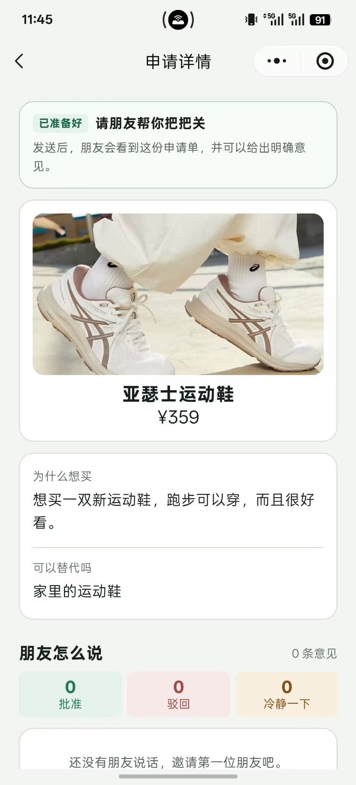
01 / ORIGIN · FROM A REAL BEHAVIOR
THE POST THAT STARTED IT
《把想买的东西
发给朋友走审批》
“你觉得我该买吗？”
我注意到一种已经存在的消费行为：当一个人看到想买、但又没有完全确定的东西时，有时会把商品链接发给熟悉自己的朋友，问一句：“你觉得值得买吗？”
这个行为本身已经存在。用户并不是缺少一个替自己做决定的人，而是在寻找一个外部视角。
我开始思考：如果把一次发生在聊天里的消费讨论，变成一个有开始、有反馈、有结果的结构化流程，会发生什么？
BEFORE THE PRODUCT
原来的行为已经存在。
它散落在聊天中，没有留下完整的消费决策过程。
THE FRICTION
那些已经产生购买欲，
但在真正付款之前，
仍愿意重新想一次的人。
在我观察到的这些场景里，真正的问题不是用户完全不知道要不要买。
从“有点心动”到“直接付款”之间，往往缺少一个主动停下来重新审视的时刻。缺的不是答案，而是一次暂停。
产生购买欲
↓
立刻付款
产生购买欲
↓
停一下
↓
听外部意见
↓
重新思考
↓
自己决定
PRODUCT HYPOTHESIS
This was the hypothesis I wanted to test.
这不是结论，而是我最初想验证的产品假设。
PRODUCT INSIGHT
因此，我没有把产品设计成一个替用户判断“该不该买”的工具。它只负责创造一次：说明理由 → 获得外部视角 → 重新思考的机会。最终决定始终属于用户自己。
PRODUCT PRINCIPLES
它们决定了 MVP 应该做什么，也决定了它不应该做什么。
不替用户做决定
在付款之前制造一次暂停
让熟悉用户的人提供另一种视角
不做 AI 自动判断“该不该买” · 不做强制消费限制 · 不做复杂预算管理 · 不替用户完成最终选择
第一版只验证一个核心假设：在付款前加入“说明 → 朋友反馈 → 再决定”，是否有人愿意使用。MVP CORE FLOW · THE FIRST VERSION
第一版，只验证一个核心行为。
用户是否愿意在付款前，先把购买理由说出来，邀请朋友给意见，再完成自己的最终决定？
01 / EXPRESS
先写下商品、价格和购买理由。
把一个模糊的「好想买」，变成一个可以被讨论的问题。
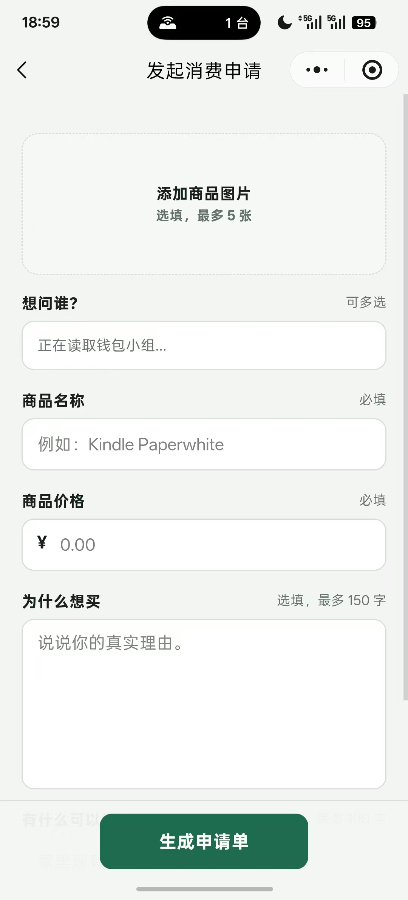
02 / ASK
把这次消费申请分享给朋友。
不是继续说服自己，而是主动引入一个外部视角。
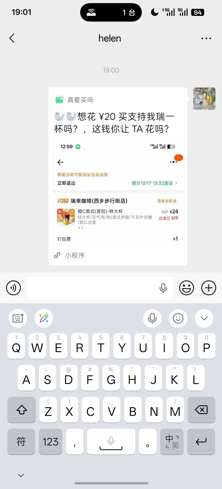
03 / PERSPECTIVE
朋友可以批准、驳回，或者建议冷静一下。
好友给出的，是消费意见，不是替用户完成最终决定。
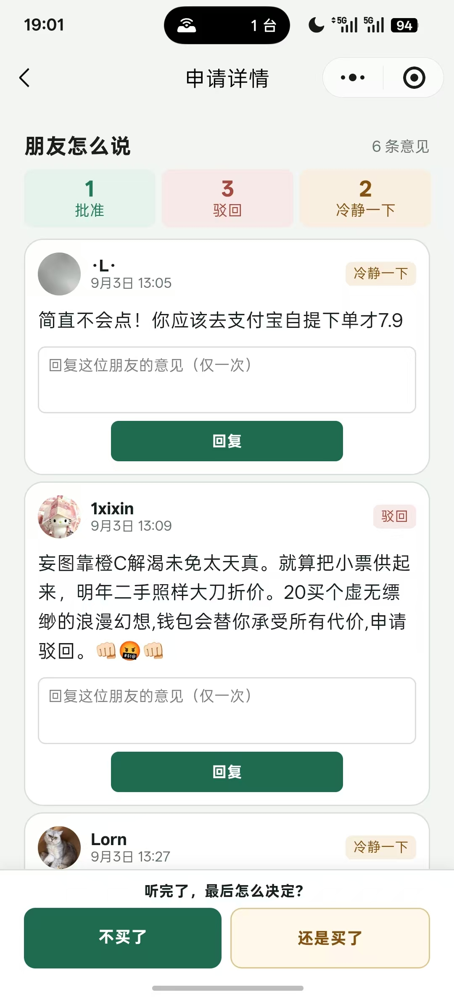
04 / YOU DECIDE
选择「不买了」或「还是买了」。
产品负责制造一次暂停，但不拿走用户的决定权。
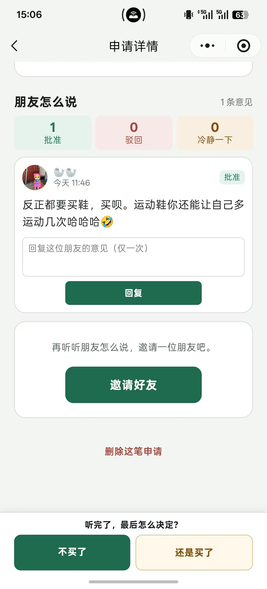
EXPRESS ↓ ASK ↓ REFLECT ↓ DECIDE
FROM AN IDEA TO REAL USE
上线之前，很多产品判断都只是我的假设。真正的变化发生在用户开始使用以后：一些原本看起来合理的设计，在真实场景中暴露出了新的问题。
REAL USER FEEDBACK LOOP
发布版本 ↓ 真实用户使用 ↓ 反馈 / 行为异常 ↓ 重新定义问题 ↓ 修改产品 ↓ 再次验证
FROM HYPOTHESIS TO REAL USE
我没有停在概念验证。
独立完成 MVP → 微信小程序上线 → 获得真实用户 → 建立反馈群 → 持续迭代
4,789Product Users
2,043消费申请
4,358真实意见
DATA SNAPSHOTFROM ONE-OFF TO ONGOING
一开始，产品解决的是一次性的消费犹豫。
但真实使用里，很多人并不是只问一次朋友。
他们会反复问同一群熟人：
这个要不要买？有没有平替？这次该不该忍住？
于是，一次性朋友反馈，
开始延伸成固定熟人长期参与的钱包小组。
一次性朋友反馈
钱包小组
06 / WALLET GROUP
WHY WALLET GROUP
当用户一次次把消费申请发给同一群朋友时，
产品就不再只是“一次找人帮我看看”，
而是逐渐形成了一种长期存在的消费决策关系。
钱包小组不是更多人替你决定，
而是把“下次再问谁”这件事固定下来。
01 / FIX THE PEOPLE
创建或加入钱包小组，
把那些本来就会互相劝消费的熟人留在同一个地方。
这样下一次犹豫时，
不用重新找人、重新解释、重新建立上下文。
从一次分享，变成固定关系。
02 / ASK INSIDE THE GROUP
进入小组后，用户可以直接在这个关系里
继续发起新的消费申请。
“帮我看看”不再是临时分享，
而变成一种长期存在的协作方式。
不是重新邀请一遍朋友，
而是在已有关系里继续发起。
03 / ONGOING PARTICIPATION
成员不仅能持续看到新的消费申请，
也能看到这个月的花钱状态、最近发生的记录。
这不再只是一次审批，
而是一段长期存在的消费协作关系。
一次求助，变成持续参与。
04 / YOU STILL DECIDE
小组成员会从不同角度给出意见：
可以买、别买、再忍忍。
朋友提供外部视角，
最终决定仍然属于申请人自己。
多人参与，不等于替你做决定。
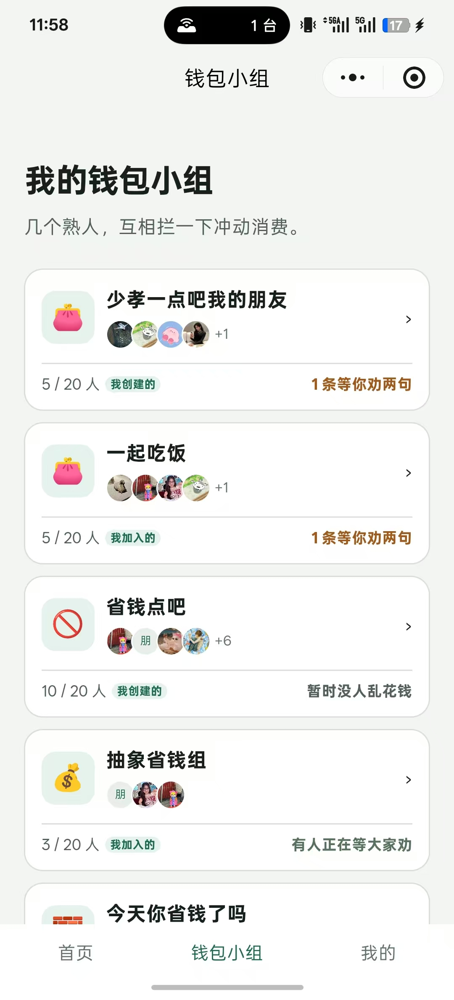
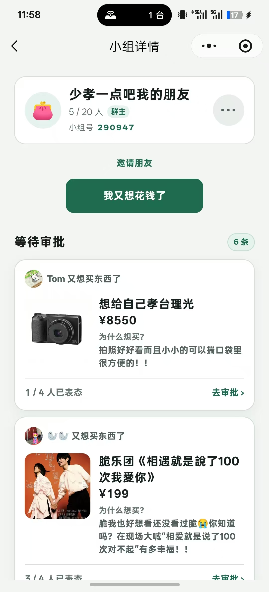
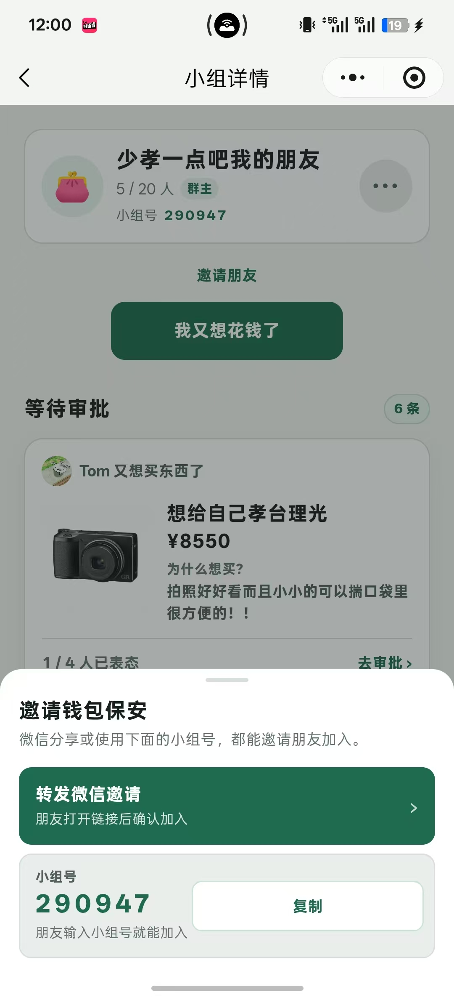
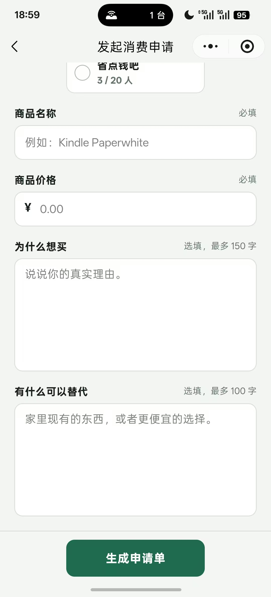
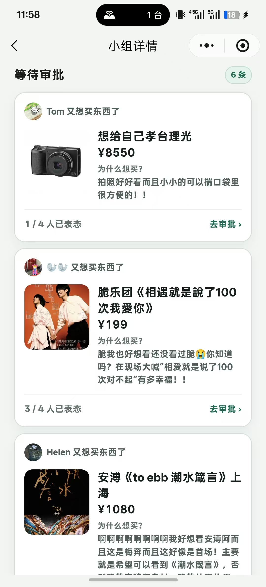
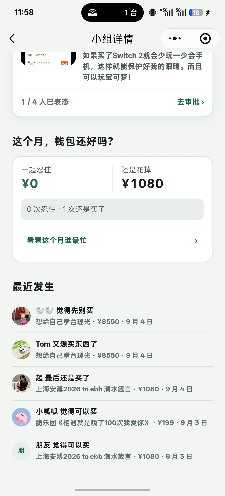
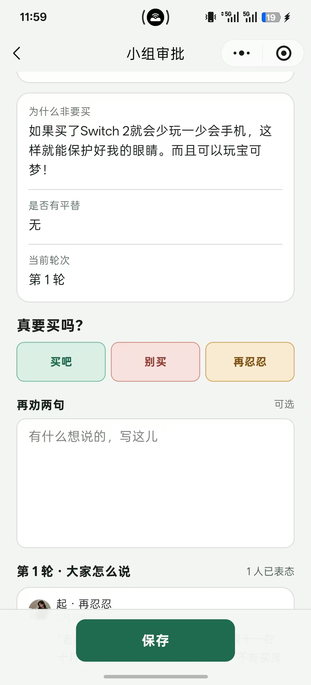
我的钱包小组
05 / USER-DRIVEN ITERATION
它是在被使用以后，
才开始变得具体。
MVP 上线后，我建立了真实用户反馈渠道。我没有直接把每一条反馈当成需求：先判断用户真正遇到的问题、它是否影响核心流程，以及是否值得进入下一次迭代。
CORE FLOW IMPACT 是否影响完成一次消费决策？ FREQUENCY 是否被反复遇到？ USER VALUE 是否改善理解、参与或决策体验？ COST / RISK 现在解决是否值得、是否破坏原有逻辑？
不是所有反馈都会直接变成功能。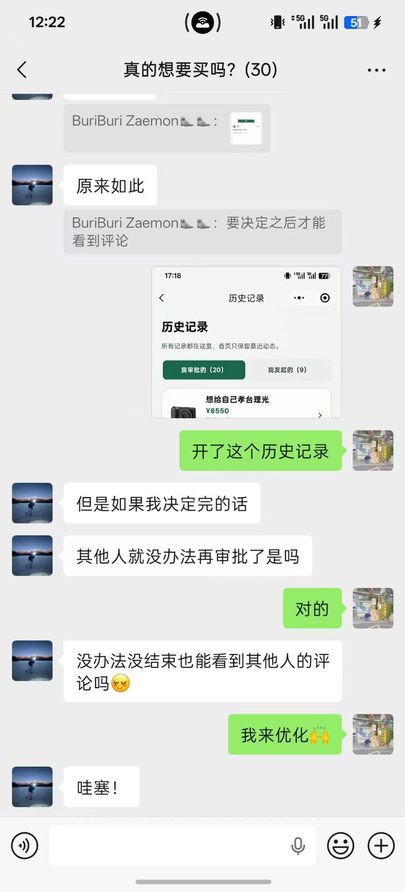
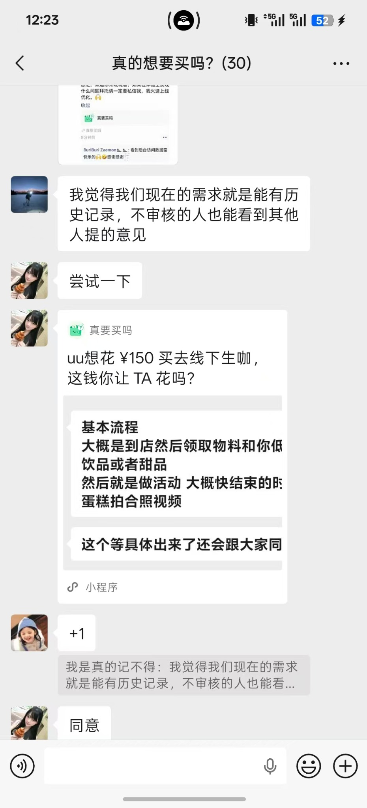
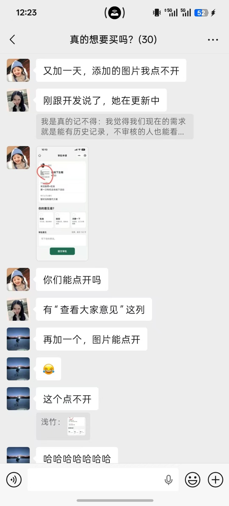
CASE 01 · HISTORY & VISIBILITY
CASE 01 · DECISION DOESN'T END THE STORY
“没结束也能看到其他人的评论吗？”
“决定以后，这条申请就结束了吗？”
用户还想回看商品信息、朋友意见和最终决定。
消费决定不是一次性动作，而是一段有回顾价值的过程。
增加历史记录；完成后的申请仍可查看商品信息、朋友意见和最终决定。
从“完成一次审批”，
变成“留下一个决策记录”。
CASE 02 · VIEWING ≠ VOTING
“不审核的人也能看到其他人提的意见。”
我不一定要马上表态，但我想先理解这里正在发生什么。
原来的设计把“查看意见”和“参与审批”绑定在一起。但参与讨论，并不等于必须立即表态。
“查看”和“做决定”应该是两个不同动作。
重新整理待审批、查看大家意见与历史记录之间的关系，让用户不需要完成审批，也能理解当前讨论。
查看 → 理解 → 参与讨论 → 最终决定。
不是所有进入页面的人，都需要立即做决定。
OTHER USABILITY IMPROVEMENTS
修复商品图片无法打开的问题。
优化商品信息展示，让朋友可以在判断前看清必要信息。
这些反馈修正了单次消费申请的体验。
NEXT · FROM ONE-OFF TO ONGOING
01 / REAL USE
REAL PRODUCT · REAL BEHAVIOR
截至 2026.09.07
4,789累计业务用户
2,043消费申请
4,358真实用户意见
用户不只是进入了产品。他们真的发起了消费申请，也真的有人参与这些消费决定。
NO BUY
02 / FINAL DECISION
最终选择「不买了」
在已经完成最终决定的
682 笔申请中，
276 笔最终选择「不买了」。
276不买了
40.5%
406还是买了
59.5%
DATA NOTE40.5% 表示：在已完成最终决定的申请中，有 40.5% 最终选择了“不买了”。它不能单独证明这一结果完全由产品造成。
产品的目标从来不是让所有人都“不买”。而是让最终选择，发生在一次重新思考之后。
GROUPS
03 / WALLET GROUP ADOPTION
从一次性的好友分享，开始出现固定关系下的持续参与。
658钱包小组
1,768小组参与用户
1,008小组消费咨询
2,121小组真实意见
EARLY SIGNAL这些数据说明 Wallet Group 已经产生真实使用；长期留存和重复参与，仍需要继续通过更长周期的数据验证。
Data snapshot · 2026.09.07
Source: WeChat Mini Program / Tencent CloudBase production database · 线上业务数据库汇总
WHAT I LEARNED
真实用户说出来的往往只是表面问题；需要继续判断用户真正卡在哪里，以及该改功能还是产品结构。
MVP 到 Wallet Group 的变化来自新的使用模式，而不是“想多做一点”。
上线以后，才开始区分什么已经发生，什么只是我希望发生。
目前已有真实产品行为支持：
还需要重复使用率、回访周期与再次发起申请比例。
还不知道同一小组是否持续活跃、成员是否重复参与。
目前只能确认结果，不能证明没有产品时用户原本一定会购买。
我下一步真正想知道的不是：
有多少人打开了这个产品。
而是他们会不会在下一次犹豫时，再次回来。
每一个结论，都等待下一次验证。
这些问题还没有答案。所以，这个产品还值得继续被使用。
09 / TRY IT
《真要买吗》微信小程序已经正式上线。
发起一笔消费申请，邀请朋友帮你看看。
看看下一次准备付款之前，会不会多一次重新想想的机会。
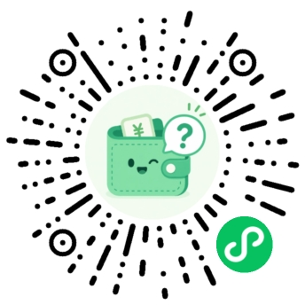
QR CODE扫码体验「真要买吗」
微信小程序 · 可直接体验买不买，
先问问自己，
也问问重要的人。